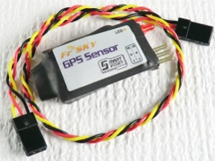
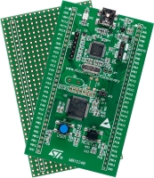
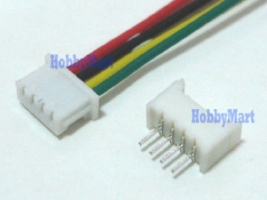
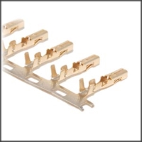
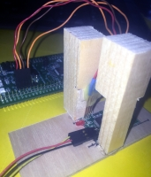
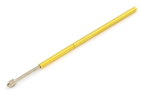

FrSky GPS updating 10 times a second?
There is a lot to like about the FrSky telemetry system. Unfortunately, the GPS-V2 device with the factory firmware isn't very likeable. The good news is that you can update the firmware yourself and realize the full potential of the GPS V2 hardware.
Here is the hardware you will need:
FrSky GPS V2 sensor  |
ST-Link device (STM32F0Discovery shown)  |
1.25mm JST type connector  |
Servo connectors  |
If you have a bunch to do, you can build a jig and go solderless using "pogo pins" from Sparkfun:
My test stand  |
Pogo Pin closeup  |